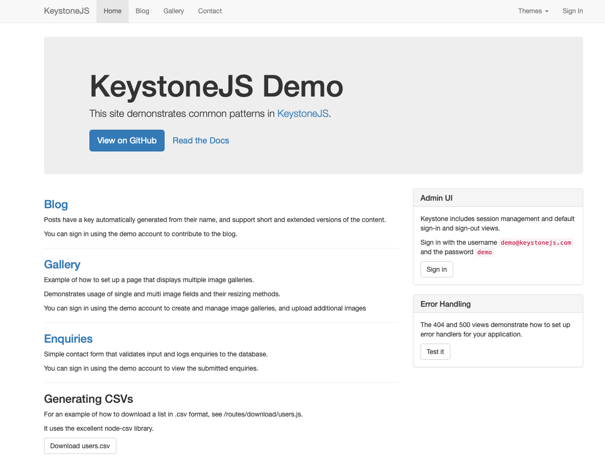

Lab 5 Acceptance Testing (using Keyword-Driven Testing)
Lab
Objective:
This Lab aims to help students to learn the concepts of acceptance testing,
design test cases based on user scenarios, and be familiar with an automated
keyword-driven testing tool.
1. SUT
Description:
The system to be tested for this lab is
KeystoneJS, an open
source framework for developing database-driven websites, applications and
APIs in Node.js. KeystoneJS makes it easy to create sophisticated web sites
and apps, and comes with a beautiful auto-generated Admin UI. To learn more
about this platform and its features, please refer to KeystoneJS
at GitHub.
2. The Testing Tool
The testing tool will be used in this
lab is Robot Framework with
Selenium
library. The instructions for installing Robot Framework using pip (with
python) can be found
here (pip install robotframework)
and for installing Selenium library can be found
here (pip
install --upgrade robotframework-seleniumlibrary).
You can use RIDE
(standard editor), RED
(eclipse plug), or
vs code plugin (Robot Framework Intellisense) to develop your tests. To
use
Selenium library for Robot Framework, you need to install
browser drivers separately and place it into a directory that is in the
PATH of your operating system or a directory of your test scripts. For those
using chrome browser, you can find and download the right
version of Chrome Driver for your browser. A
WebDemo example of
using Robot Framework can be found
here. You can learn
more about how to use Robot Framework through
the user guide of Robot Framework.
You will need to run KeystoneJS application on
Docker. Please install
Docker Desktop
for Windows or
Docker Desktop for Mac on your machine.
After completing the Docker Desktop installation, please run the Docker
Desktop application and follow the instructions at
Docker Hub to
run the KeystoneJS.
If everything goes well, you may see the application is running at
http://127.0.0.1:3000/

3. Test Project and Test Suite Generation
In this lab, you will need to develop test requirements for the features
of KeystoneJS. You are
also required to design test cases to verify the test requirements. These
test cases should be organized in terms of the structure of the feature/use
case/user story/user scenario to be tested. Each test requirement should
have at least one test case to verify (i.e., cover) the requirement. For the
design of test cases, you need exercise the
possible scenarios (or paths)
for the features/use cases/user stories/user scenarios
to be tested, including happy and alternative paths, as
well as possible valid and
invalid test data as many as you can.
Make sure
that proper coverage criteria
are used when designing the test cases. Since KeystoneJS
supports a lot of features, you will be required to test only the following
features in order to limit the necessary test effort.
Design one or
more test cases for each of the following features and you need to
design at least 10 features/uses cases/user
stories/user scenarios for the Lab.
Create a post on the Admin UI page
Edit a post on the Admin UI page
Delete a post on the Admin UI page
Search posts by keyword on the Admin UI page
Create a comment on Admin UI page
Edit a comment on Admin UI page
Delete a comment on Admin UI page
Create a category on Admin UI page
Show posts of the specific category by pressing category name on the "Blog" page
Create an enquiry on the "Contact" page
Delete an enquiry on Admin UI page
Create a new user on Admin UI page (Name, Email, Phone, and Password must be set when creating the new user)
Please note that you must do the verifications
or assertions for each test scenario to
verify if the execution results are correct.
¡@
4. Test Plan (2~3 pages
would be sufficient for the test plan)
To begin with, a plan must be created. Document
this test plan, as it will be included with your lab report. This plan
should include the following information:
Summary/Scope (briefly describe the application under test and the test requirements or test goal)
Features to be tested (lists each component or feature to be tested)
Success criteria of completing the test (i.e., test pass/fail criteria used for deciding whether the features are PASS or FAIL)
Test environment and/or infrastructure (including hardware, software, test data, etc.)
Test approaches (e.g., describing what approaches and coverage criteria will be used to design test cases for each feature to be tested (e.g., user scenarios, ISP, etc.), how to evaluate the adequacy of the test (e.g., coverage), and what tools will be used to perform the test; you may use multiple testing technique to design the test cases to ensure that all the test requirements can be satisfied and the quality of tests can be achieved.)
Testing tasks (or activities required for implementing the approach)
5. Lab Report
The Lab report must include (but not limit to) the following sections:
Test Plan: briefly describe test requirements, planed test activities, approach, and success criteria for the test.
Test Design: use approaches combining ISP, graph (use cases), and logic methods. Please use the template to specify the design of your test cases, including the test case ID, test case name, scenario, test steps, input data, coverage criteria, and expected results.
Keyword Design: you are encouraged to design your own keywords (user-defined keywords) and reuse the keywords as much as you can in order to increase the modularity of test cases and reduce the test effort. Here is a set of resource keywords for KeystoneJS, including a shell script for running Robot Framework, that can be used to reduce your effort of developing test script.
Test Implementation: Robot Framework test scripts of your test cases.
Test Result: execution results (i.e., test report) of Robot Framework test scripts.
Test Coverage (optional): you may use SimpleCov for Ruby on Rails, Blanket for client-side Javascript, or istanbul for server-side Javascript to measure code coverage.
Please convert your Lab report to .pdf
file, .docx file will not be accepted.
The Lab report and your Robot
Framework test script must put in the corresponding directory in your
Lab repository (e.g. TestProject -> LabReport -> Lab5).
Make sure you have pushed your code and Lab report on the
GitLab
successfully.
Finally,
you must open an
new issue on
TA's
TestProject to notify TA that
you have done your lab.
TA will run all of your test cases on a clean
KeystoneJS environment, which is a whole new Docker container. You have to
make sure that all of your test
cases can run correctly without any error and pass every assertion from the
first one to the last one . If you develop your tests with multiple
test files, you
may consider to organize your tests into test suites.